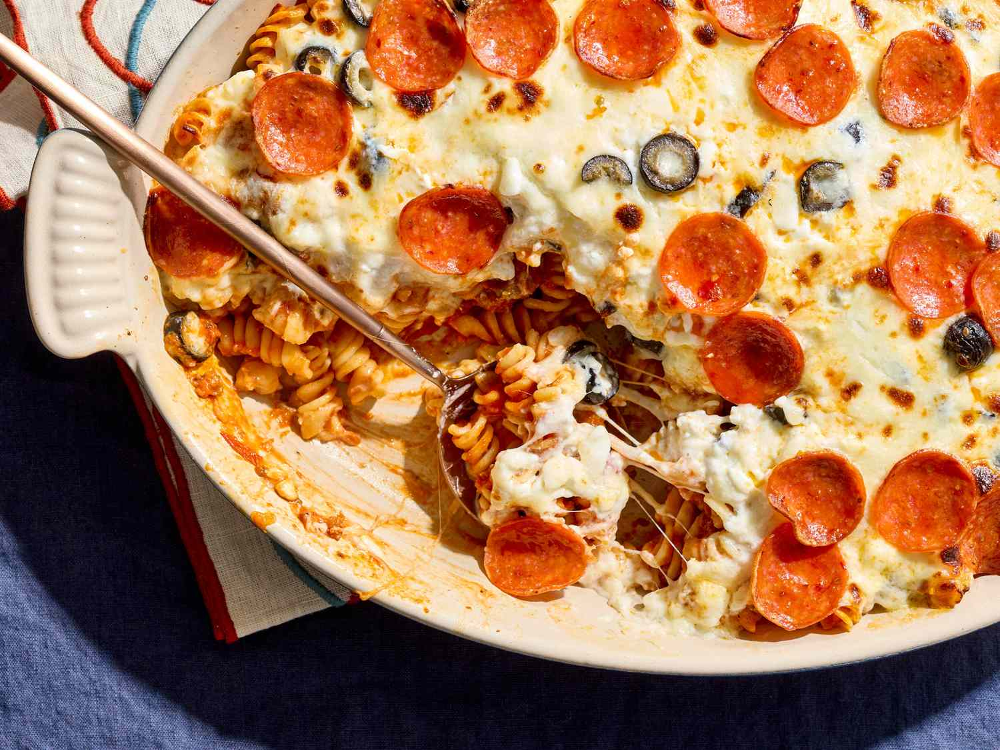
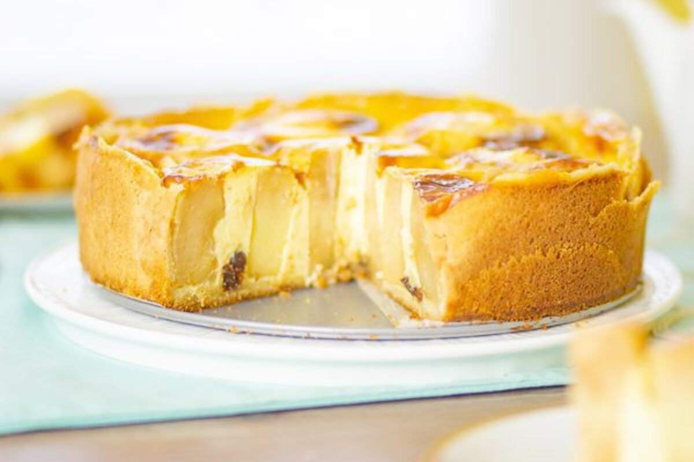

My Favorite European Recipes
-
Pepperoni Casserole

Ingredients:
- 1 (16 ounce) package uncooked rotini pasta
- 1 pound ground Italian sausage
- 1 (16 ounce) jar pasta sauce
- 2 (12 ounce) containers cottage cheese
- 1 (2.25 ounce) can sliced black olives
- 12 ounces shredded mozzarella cheese
- 2 (3 ounce) packages sliced pepperoni
Steps
-
German Apple Cake

Ingredients:
- 1 cup vegetable oil
- 2 large eggs
- 2 cups white sugar
- 1 teaspoon vanilla extract
- 2 cups all-purpose flour
- 2 teaspoons ground cinnamon
- 1 teaspoon baking soda
- ½ teaspoon salt
- 4 cups apples - peeled, cored, and diced
Steps